Spring Colors is a modern romance drama. After it launched, it earned strong reviews and high views. It was named to the 2024 selection of Chinese TV series from the National Radio and Television Administration, and to New Weekly's list of innovative series of the year. Its visual language is also boldly new. Director of photography Zhu Enli, with his wide experience and sharp artistic sense, tells a love story that spans many years. He blends the realism of documentary with the emotional force of drama to make a work that is both deep and beautiful.
In this interview, DP Zhu Enli shares the original idea and shooting experience of Spring Colors, and talks in depth about using the Sony CineAltaV 2 camera. From pre-production to color grading, every step shows his pursuit of the art of image and his care for technical detail.
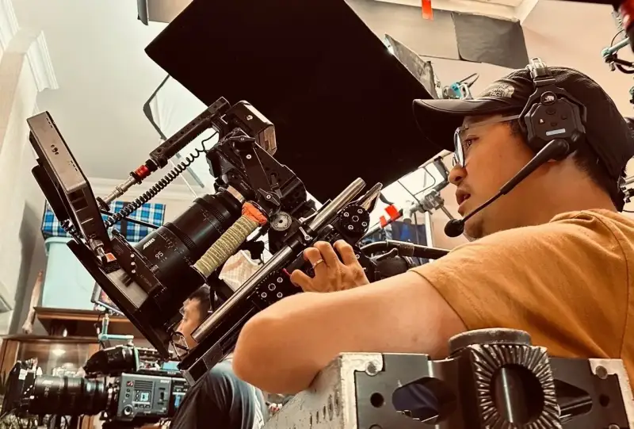
DP Zhu Enli shoots with the split-body Sony CineAltaV 2
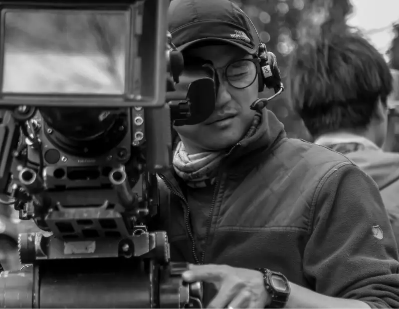
DP Zhu Enli at work on set
Q: Hello Mr. Zhu, could you give a brief self-introduction? Can you share something about your new drama Spring Colors?
A: Hello, I am DP Zhu Enli (CNSC). In 2009 I went to San Francisco in the US and finished a master's degree in cinematography. I then worked on several films in San Francisco and Los Angeles. In 2013 I returned to Beijing and started Yuanwei Studio. I have shot many kinds of subjects, including documentaries, dramas, and ads.
As for Spring Colors, it is a modern drama that opened in April 2024. It tells a love story that spans many years. When I first read the script, it left a deep impression. It is fluid and visual, and while it portrays love, it also touches on deep themes such as life and death, dreams, and parting. This gives the story many layers and wide room for my visual work. So when director Cheng Liang found me, I was drawn to the project at once. I decided to use it to explore new ways of storytelling and new techniques.
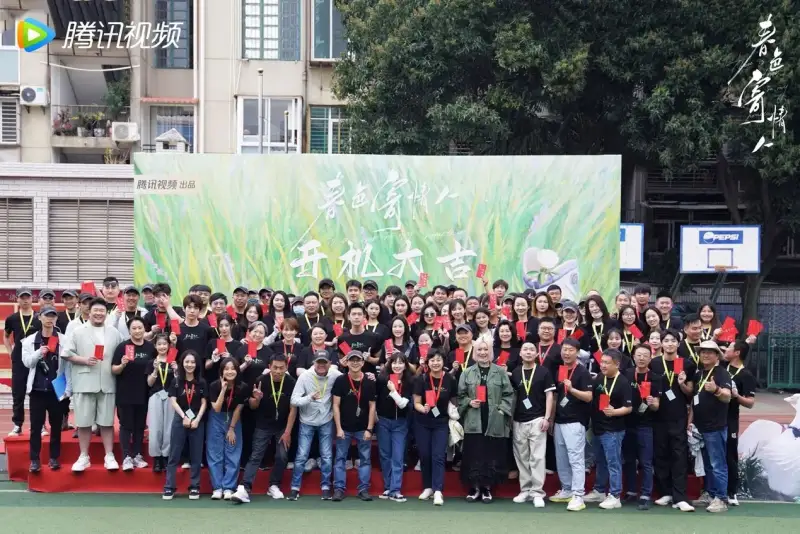
The Spring Colors crew
Q: How was shooting Spring Colors different from your past projects? What were the difficulties and challenges?
The shooting schedule for Spring Colors was tight. In less than 90 days, one unit finished shooting 21 episodes. That was a huge challenge for the whole team. Also, this was my first time working with director Cheng Liang, so we needed time to adjust to each other's way of working and reach what the director wanted.
Though there were early difficulties, we joined the crew a month early to prepare, and we soon found a shared language. The work went very smoothly. The hardest part was finding the visual character of Quanzhou. I wanted a look that felt familiar yet different, and that could resonate with the audience through images. Photography is not only about light and color. It is also about the local air, the time of day, the feel of the subject, and the flow of people and place. These elements are key to the mood of the film, and I needed to show them in the frame.
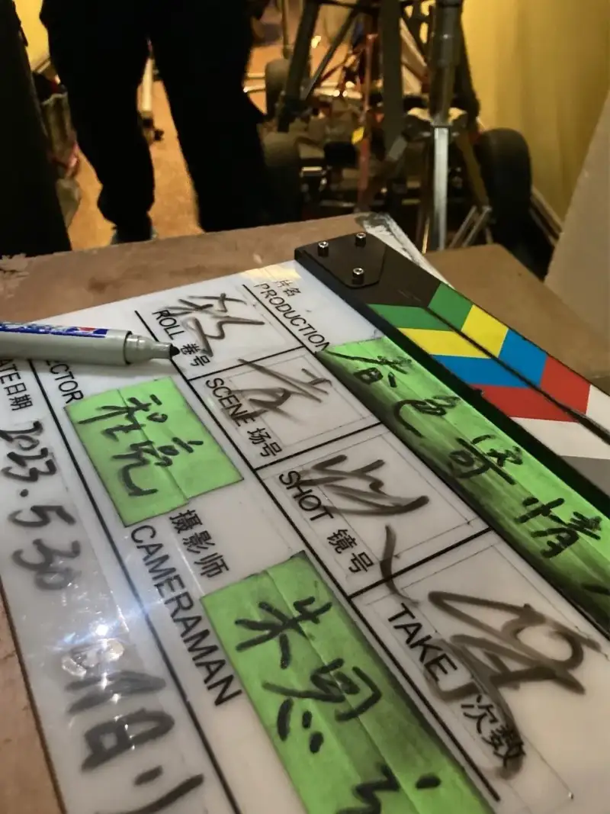
Clapperboard info
Q: You mentioned this was your first collaboration with director Cheng Liang. On a crew, a director and actors go through an ice-breaking process. As the DP, how did you build rapport with the director? Any advice to share?
Yes, the first few days matter a lot for trust and understanding. I talk through the script in depth to learn the director's view of the story and what he wants visually, and we build our talk on that. I usually bring photos or scene samples I have shot to share my feeling and idea for a given scene.
This image-based way of talking conveys my ideas more directly and shows the director what we can do together. This way we quickly find common ground and lay a solid base for the work ahead.
Q: You studied abroad and worked on many foreign productions. In your view, how does home production differ from abroad?
I think the gap between home and abroad is closing. When I returned in 2013, the difference was clear, especially in pre-production.
Foreign teams spend more time on careful preparation, while domestic teams often rush because time is short. But on Spring Colors, thanks to the director's persistence and the producers' understanding, and especially the trust and support of producer and screenwriter Even, we had a fairly generous preparation period.
Overall, the technical workflow is now much the same, but there is still some difference in preparation time and how resources are shared.
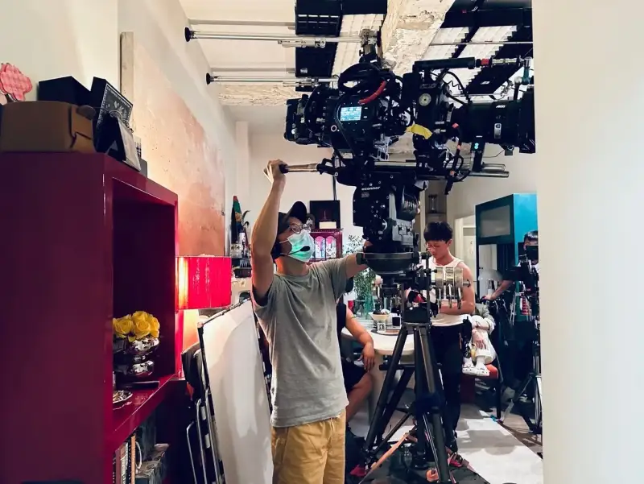
The split-body Sony CineAltaV 2 on set
Q: Which cameras did you choose for Spring Colors? How did they help in practice?
For this shoot we mainly used four Sony CineAltaV 2 cameras, one of them in a split-body setup.
I have used the Sony CineAltaV line on many projects. Its portability and stability left a strong impression. On complex scenes, its strong color rendition and high dynamic range kept the final quality safe.
The split-body design of the CineAltaV 2 is also very good. It lets me shoot in tight spaces or at special angles, which raises efficiency a lot. The handheld feel is wonderful. It often puts me in a documentary state of mind, light and free of burden. When I want a change in the camera work, I can step into the scene and shoot at once. This gives me some very bold angles and makes the frame more lively.
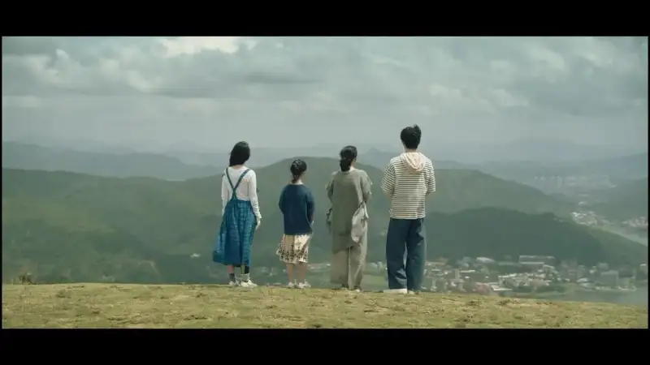
Film still
Q: Which resolution and codec did you use on the CineAltaV 2? Why?
For this series we shot in 6K at a 1.85:1 frame, and it was finally delivered in a 2.2:1 widescreen.
For post-production needs and cost, we chose X-OCN ST. This format met the high quality requirement and gave enough room for color grading. In our tests, the difference between X-OCN ST and X-OCN XT for this show was almost nothing, so X-OCN ST was the more economical choice.
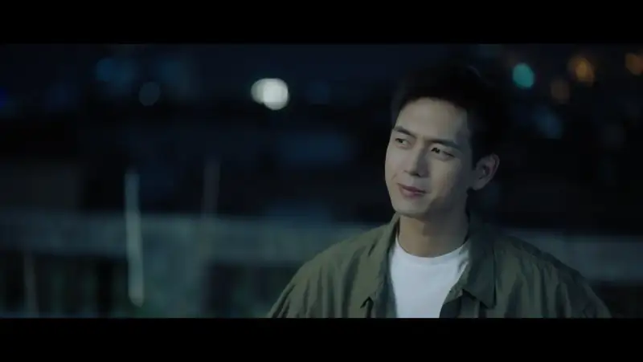
Film still: color in a night scene
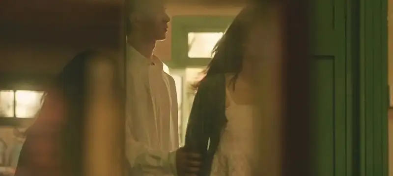
Film still: color in an interior daytime scene
Q: For on-set monitoring, DIT, and the post pipeline, how did you plan the codecs and pre-grading?
Before the shoot, I went to rental houses such as Galaxy Star and Meta to test the CineAltaV 2 on skin tone and dynamic range. After a test grade, I chose several LUTs that fit the needs of a modern romance drama.
On set, we loaded the custom LUT into an external monitor to watch the graded color live, so every frame matched the intended look. This helped the director see the result on the spot and laid a solid base for the final grade.
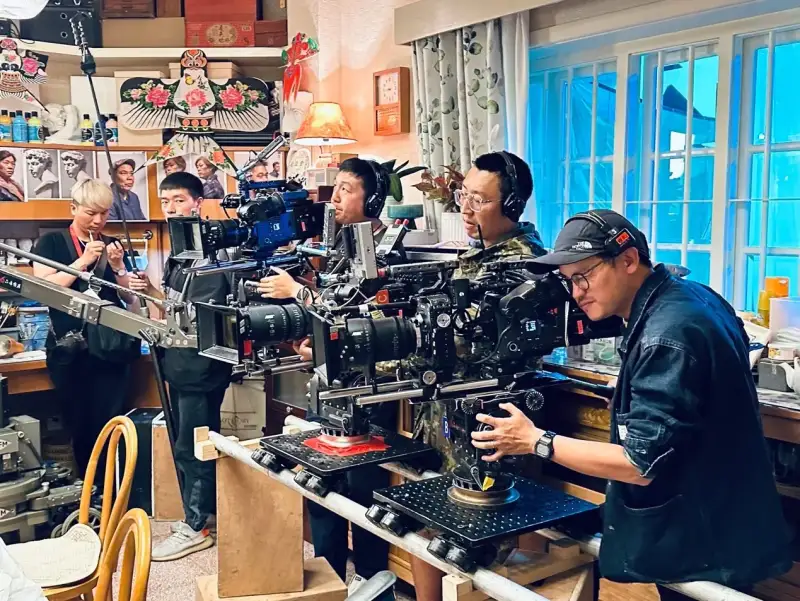
Three CineAltaV 2 cameras shooting together
Q: Which qualities of the CineAltaV 2 contributed to the overall style and mood of Spring Colors? Which features or settings did you use most?
When I use the CineAltaV line, what stands out is color consistency. TV dramas are mostly shot with multiple cameras, and I used to worry about color on set. Once I used CineAltaV cameras, those problems went away. On Spring Colors we used four CineAltaV 2 cameras, but their monitor images were almost identical, which is hard to achieve with other brands.
Also, the rolling shutter of the Venice camera is controlled very well, so the frame stays steady even in fast motion. I do not see that on other cameras. And above all, the color is excellent. It is rich yet clear, like an oil painting, and it is perfect for expressing delicate emotion and mood.
Q: The CineAltaV 2 has dual native ISO. How do these two base ISOs feel in terms of noise and dynamic range?
The dynamic range of the CineAltaV 2 is very good. The dual native ISO lets me use filters more freely. On some cameras, at ISO 800, shooting a night scene with a filter is almost impossible. One filter can eat 1.5 to 2 stops of aperture, and adding a black diffusion filter makes it harder still. It is very hard to add light on set to make up for that, and it puts a lot of pressure on the lighting team.
The first CineAlta could reach ISO 2500, and the CineAltaV 2 high-sensitivity mode reaches ISO 3200. This solves the light-eating problem for me. Even on a night scene, I can use filters freely. That is very convenient for my way of working.
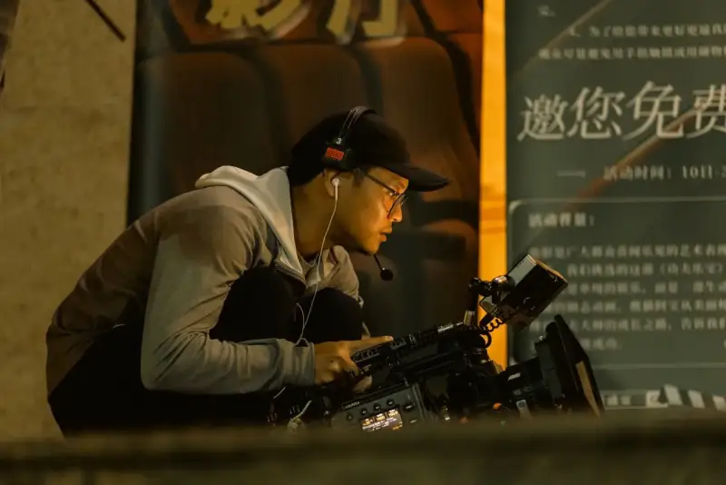
The smaller CineAltaV 2 body makes low-angle shots easy
Q: As a DP you have shot many kinds of work. When you take on different subjects, directors, and types of film (such as feature, TV, or documentary), how do you handle and shape the visual style?
Whether documentary, drama, or ad, I think the core is to tell a story in pictures. So I adjust my way of shooting to each project. As a DP, I use the limited time and budget to be creative and offer the best visual solution.
For Spring Colors, I wove the realism of documentary into the narrative of drama to create a look that feels close to life yet full of art.
Q: You have used the CineAltaV line in many works. How do you feel about the line overall? How is the CineAltaV 2 different from and better than the first model?
The Sony CineAltaV 2 is a clear step up from the first model. It is smaller and easier to carry and operate. This advantage is especially clear when you pair it with other gear from the mechanical department.
The higher base ISOs, ISO 800 and ISO 3200, also make low-light shooting easier. And the color is as good as ever, which is the core advantage I value most.
About the Sony Cinema Camera System
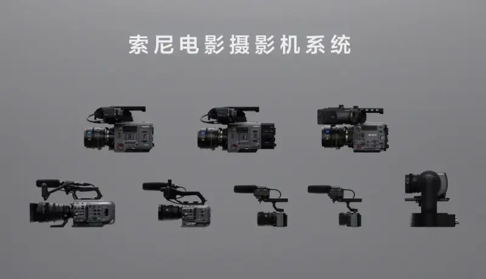
Sony Cinema Camera System
Sony keeps working to faithfully bring out the creator's intent through new technology. With wide experience in film and TV, Sony offers a broad and efficient creative shooting system to meet the needs of high-quality filmmaking. The Sony Cinema Camera System is built around the CineAlta line. It includes the widely praised digital cinema cameras CineAltaV, CineAltaV 2, and CineAltaB. It also includes the full-frame cinema camera FX9 (popular in documentaries and TV), the full-frame PTZ camera FR7, the flexible FX6, the light FX3, and the FX30 as the first cinema camera for young users. CineAltaB is built for diverse filmmaking and enriches the system with more room for imagination. Sony also offers Crystal LED screens for high contrast and rich color, plus virtual-production tools, to improve the workflow and free up filmmaking.
For more product information, visit the Sony Cinema Camera System at sonystyle.com.cn.